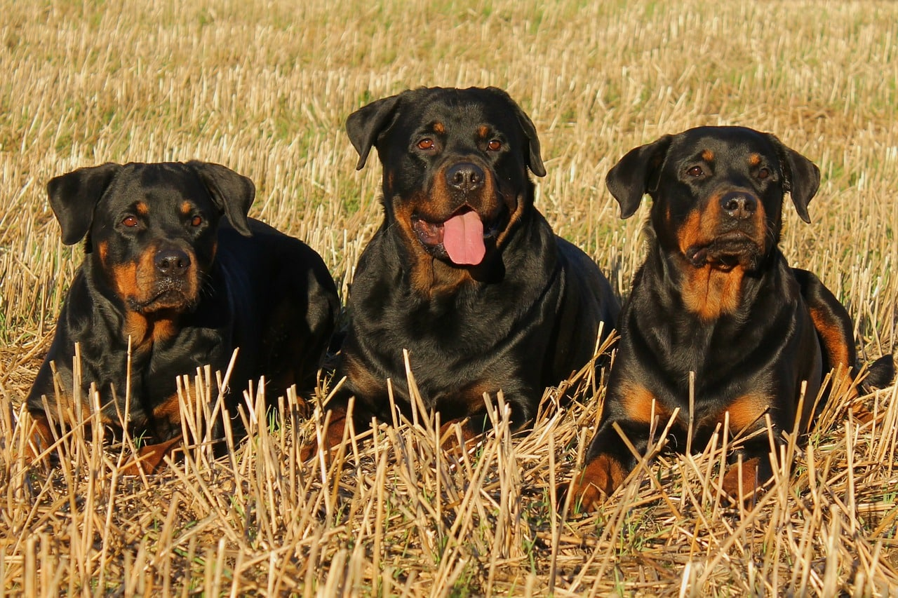

| דף ראשי | גזעים | מחלות | רקעים ותמונות | סקר | צרו קשר |
|---|
| קוקר ספאנייל |
| סמוייד |
| שפיץ יפני |
| פומרניאן |
| פודל |
| דני ענק |
| דלמטי |
| רועה גרמני |
| רועה קווקזי |
| רועה בלגי |
| בולדוג אמריקאי |
| בולדוג צרפתי |
| בולדוג אנגלי |
| צ'או צ'או |
| שיצ'ו |
| אמסטף |
| פינצ'ר |
| רוטווילר |
| דוברמן |
| האסקי סיבירי |
רוטוויילר
מידע כללי
כאשר אנחנו רואים כלב רוטוויילר מטייל, רובנו מתרחקים כמה צעדים לאחור וכל זאת בגלל המראה החיצוני המאיים. כלבי הרוטוויילר סובלים משם רע ומיחסי ציבור רעים עקב נשיכות של בני האדם לרבות ילדים קטנים, ולמעשה רוטוויילר הוא כלב ככל הכלבים. טיפול ואילוף נכון יגרמו לרוטוויילר להתנהג בהתאם ומעבר לכך כלבי הרוטוויילר נאמנים ואוהבים את הבעלים אהבה אין סופית.
רוטוויילר - מקור הגזע והיסטוריה
הרוטוויילר הוא כלב רועים במקור, אבל בשל המראה המאיים שלו, השתמשו בו הרומאים ללווי חיילי האימפריה במסעי הכיבוש שלהם, בציורים ובפסלים מהתקופה רואים את חיילי הכיבוש הרומי הולכים עם כל הציוד ולצידם מתהלכים הכלבים שצוירו ככלבים ענקיים ופראיים. שם הגזע מגיע כנראה מהעיר רוטווייל - עיר מסחר של בקר. כלבי הרוטוויילר שימשו את בני האדם בציד במשיכת העגלות ובשמירה על הבית. עם הקדמה נושל הרוטוויילר מרוב משימותיו וכמעט נכחד, אבל בעזרת אנשים טובים נשמר הגזע. בהרבה מדינות בעולם נכלל הרוטוויילר ככלב מסוכן ויש הנחיות ספציפיות לגבי אופן ההחזקה וההולכה של הכלב, גם בישראל נחשב הכלב כגזע מסוכן.
רוטוויילר - נתונים ומאפיינים
מבנה גופו של הרוטוויילר מוצק ושרירי, פרוותו קצרה וצבע הפרווה שחור וכתמים חומים באזור החזה והפנים, אוזניים קטנות ואף רחב.
משקל:40-55 ק"ג
גובה:55-70 ס"מ.
מחלות נפוצות וטיפול - כלב רוטוויילר
הרוטוויילר הוא כלב חזק פיזית וגם אחד הכלבים השורדים. הוא הגזע היחיד שהחזיק מעמד עם חיילי הלגיון הרומי במסעותיהם הקשים. עלינו בתור בעלי כלבים רק לדאוג לתזונה נכונה ולביקורים תקופתיים אצל הווטרינר.
